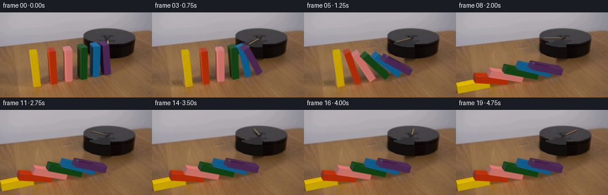
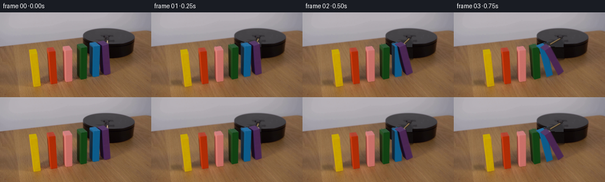
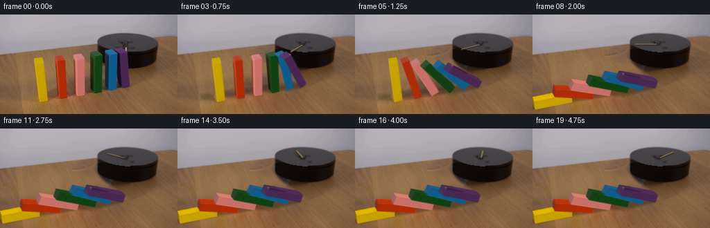
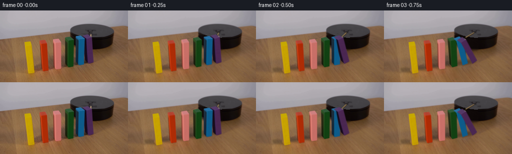

CODING AGENTS AS PIXEL WORLD MODELS
traex/GPT-6-Astra · 0034
点击播放 · 原生 RGB 像素
此结果可播放，但该运行尚未通过最终提交审核。页面展示不代表评测通过。
逐轮保存的候选
回放视频、检查图与代码变化。
每份候选均可单独播放。实际图片检查记录在下方工具轨迹中。
候选 01播放与检查图
点击播放 · 原生 RGB 像素


展开代码变化
--- 上一保存版本
+++ 本次保存版本
@@ -0,0 +1,246 @@
+from pathlib import Path
+import numpy as np
+from PIL import Image, ImageDraw, ImageFilter
+import cv2
+import math
+from artifact_io import save
+
+ROOT=Path(__file__).resolve().parent
+W,H=256,144
+S=3
+src=np.array(Image.open(ROOT/'first_frame.png').convert('RGB'))
+rng=np.random.default_rng(3481)
+# Front bottom left, front bottom right, front top right, front top left,
+# rear top left, rear top right, rear bottom left.
+shapes=[
+ [(57.1,126.5),(68.5,124.1),(62.7,69.0),(52.5,71.0),(49.1,63.6),(60.4,62.0),(52.8,119.9)],
+ [(86.2,122.3),(97.1,120.8),(94.0,65.6),(83.0,67.3),(79.3,60.8),(90.5,59.2),(82.7,115.2)],
+ [(111.1,118.1),(122.2,116.4),(122.0,63.3),(109.9,65.0),(106.6,58.7),(117.8,57.1),(107.6,111.5)],
+ [(136.6,113.8),(146.7,111.7),(147.9,59.3),(135.1,61.2),(130.0,55.5),(140.7,53.2),(131.4,107.1)],
+ [(157.2,109.6),(167.8,107.7),(169.2,55.9),(156.9,58.0),(151.3,53.1),(162.6,50.9),(151.6,103.2)],
+ [(177.0,106.5),(187.0,103.4),(184.0,52.8),(172.8,56.1),(164.9,50.3),(175.7,47.8),(169.7,100.1)],
+]
+blocks=[]
+for pts in shapes:
+ p=np.array(pts,float)
+ # indexed coordinates front left/right bottom, back left/right bottom,
+ # front left/right top, back left/right top
+ bbr=p[1]+(p[6]-p[0])
+ v=np.array([p[0],p[1],p[6],bbr,p[3],p[2],p[4],p[5]])
+ width=12.
+ height=60.
+ u=((v[1]-v[0])+(v[5]-v[4]))/2/width
+ z=((v[4]-v[0])+(v[5]-v[1]))/2/height
+ blocks.append(dict(v=v,u=u,z=z,width=width,height=height))
+
+# Reconstruct the stationary tabletop only where it was hidden by the blocks.
+mask=np.zeros((H,W),np.uint8)
+for b in blocks:
+ cv2.fillConvexPoly(mask,cv2.convexHull(np.rint(b['v']).astype(np.int32)),255)
+mask=cv2.dilate(mask,np.ones((3,3),np.uint8))
+# Original cast shadows are replaced with geometrically moving soft shadows.
+shadowmask=np.zeros_like(mask)
+for b in blocks:
+ x,y=b['v'][0]
+ cv2.ellipse(shadowmask,(round(x-10),round(y-4)),(16,7),-10,0,360,255,-1)
+mask=np.maximum(mask,shadowmask)
+# Restrict the cleanup to table and occluded platform.
+base=cv2.inpaint(src,mask,5,cv2.INPAINT_TELEA)
+# Retain fine real wooden grain inside the reconstructed slender strips.
+# A clean sample is shifted along the tabletop's grain direction.
+blur=cv2.GaussianBlur(src.astype(np.float32),(0,0),1.8)
+hi=src.astype(float)-blur
+for y in range(48,H):
+ for x in range(W):
+ if mask[y,x] and not (x>=139 and y<80):
+ xx=(x+87)%W; yy=min(143,y+18)
+ if mask[yy,xx] or yy<55:
+ xx=205+(x%43); yy=89+(y%52)
+ base[y,x]=np.clip(base[y,x].astype(float)+hi[yy,xx]*.75,0,255)
+# Elliptical, raised black platform: reveal the portions concealed by the row.
+yy,xx=np.mgrid[:H,:W]
+cx,cy,rx,ry,depth=184.0,43.2,43.5,15.6,19.0
+q=np.maximum(0,1-((xx-cx)/rx)**2)
+bottom=cy+depth+ry*np.sqrt(q)
+topfront=cy+ry*np.sqrt(q)
+body=((np.abs(xx-cx)<=rx)&(yy>=cy)&(yy<=bottom))
+top=(((xx-cx)/rx)**2+((yy-cy)/ry)**2<=1)
+for y,x in zip(*np.where((mask>0)&(body|top))):
+ noise=float(rng.normal(0,.43))
+ if top[y,x]:
+ col=np.array([49,48,51])+noise+1.3*(1-(y-35)/30)
+ else:
+ bright=1.5+4*(1-(x-150)/78)+1.5*(bottom[y,x]-y)/25
+ col=np.array([13,9,8])+bright+noise
+ if y-topfront[y,x]<2.2: col-=3
+ base[y,x]=np.clip(col,0,255)
+# Remove old small wooden pointer, leaving the spindle/mount in place.
+rodmask=np.zeros((H,W),np.uint8)
+cv2.fillPoly(rodmask,[np.array([(179,44),(185,44),(187,53),(178,54)],np.int32)],255)
+rodmask[mask>0]=0
+base=cv2.inpaint(base,rodmask,3,cv2.INPAINT_TELEA)
+basehi=cv2.resize(base,(W*S,H*S),interpolation=cv2.INTER_CUBIC)
+
+# Recover painted wood surface texture directly from the still photograph.
+faces={'front':[0,1,5,4], 'left':[2,0,4,6], 'top':[4,5,7,6], 'right':[1,3,7,5]}
+texshape=(32,160)
+for b in blocks:
+ b['tex']={}
+ for name,ids in faces.items():
+ inds=ids if name!='right' else faces['front']
+ v=b['v'][inds].astype(np.float32)
+ # Sample just inside every edge, avoiding neighboring background pixels.
+ v=v.mean(0)+(v-v.mean(0))*.92
+ tw,th=(48,48) if name=='top' else (32,160)
+ rect=np.array([[0,th-1],[tw-1,th-1],[tw-1,0],[0,0]],np.float32)
+ mat=cv2.getPerspectiveTransform(v,rect)
+ tx=cv2.warpPerspective(src,mat,(tw,th),flags=cv2.INTER_LINEAR,borderMode=cv2.BORDER_REPLICATE)
+ if name=='right':
+ # A previously hidden long face, with the same matte paint and fine grain.
+ tx=cv2.GaussianBlur(tx,(3,3),.55)
+ b['tex'][name]=tx
+
+
+def vertices(b,a):
+ c,s=np.cos(a),np.sin(a)
+ vs=b['v'].copy()
+ for i in range(8):
+ x=b['width']*(i%2)
+ z=b['height']*(i//4)
+ dx=x*(c-1)-z*s
+ dz=x*s+z*(c-1)
+ vs[i]+=b['u']*dx+b['z']*dz
+ return vs
+
+
+def paste_face(canvas,tex,quad,gain=1):
+ th,tw=tex.shape[:2]
+ source=np.array([[0,th-1],[tw-1,th-1],[tw-1,0],[0,0]],np.float32)
+ dest=(np.asarray(quad)*S).astype(np.float32)
+ if abs(cv2.contourArea(dest))<.1:return
+ M=cv2.getPerspectiveTransform(source,dest)
+ painted=np.clip(tex.astype(float)*gain,0,255).astype(np.uint8)
+ warped=cv2.warpPerspective(painted,M,(W*S,H*S),flags=cv2.INTER_LINEAR,borderMode=cv2.BORDER_REPLICATE)
+ m=np.zeros((H*S,W*S),np.uint8)
+ cv2.fillConvexPoly(m,np.rint(dest).astype(np.int32),255,lineType=cv2.LINE_AA)
+ alpha=m.astype(float)[:,:,None]/255
+ canvas[:]=np.clip(canvas*(1-alpha)+warped*alpha,0,255)
+
+
+def draw_rod(canvas,t,shadow=False):
+ # Clockwise seen from above; a horizontal oak rod over the rotary platform.
+ a=np.deg2rad(87+47*t)
+ center=np.array([181.9,43.0])
+ d=np.array([np.cos(a),.365*np.sin(a)])
+ cross=np.array([-np.sin(a),.365*np.cos(a)])
+ p0=center+d*3.0; p1=center+d*34.0
+ corners=np.array([p0-cross*1.05,p1-cross*1.05,p1+cross*1.05,p0+cross*1.05])
+ lay=Image.fromarray(canvas)
+ dr=ImageDraw.Draw(lay)
+ def poly(p,col):dr.polygon([tuple(v*S) for v in p],fill=col)
+ # Soft contact shadow of stick on the black disk.
+ sh=Image.new('L',lay.size)
+ ds=ImageDraw.Draw(sh)
+ ds.polygon([tuple((v+[-1.7,2.0])*S) for v in corners],fill=65)
+ sh=sh.filter(ImageFilter.GaussianBlur(1.0*S))
+ la=np.asarray(lay).astype(float)*(1-np.asarray(sh)[:,:,None]/255)
+ lay=Image.fromarray(la.astype(np.uint8));dr=ImageDraw.Draw(lay)
+ poly(corners+np.array([0,1.35]),(58,43,27))
+ poly(corners,(133,111,76))
+ dr.line([tuple((p0-cross*.65)*S),tuple((p1-cross*.65)*S)],fill=(173,151,110),width=max(1,S//2))
+ # Endgrain and the small dark central collar.
+ poly(np.array([p1-cross*1.05,p1+cross*1.05,p1+cross*1.05+[0,1.35],p1-cross*1.05+[0,1.35]]),(94,72,42))
+ dr.ellipse(((center[0]-2.2)*S,(center[1]-1.2)*S,(center[0]+2.2)*S,(center[1]+1.5)*S),fill=(32,29,29))
+ dr.ellipse(((center[0]-.75)*S,(center[1]-.55)*S,(center[0]+.75)*S,(center[1]+.6)*S),fill=(68,64,63))
+ return np.asarray(lay).copy()
+
+# Pivots and the no-interpenetration condition for the six falling dominoes.
+# Their tips come to rest on the upper face of the preceding block.
+D=[]
+for j in range(1,6):
+ delta=blocks[j]['v'][0]-blocks[j-1]['v'][0]
+ u=blocks[j]['u']
+ D.append(np.dot(delta,u)/np.dot(u,u))
+final=[math.pi/2]
+for j in range(1,6):
+ prev=final[-1]
+ final.append(prev-math.asin(np.clip((12-D[j-1]*math.cos(prev))/60,-1,1)))
+# Onset times incorporate travel of the impulse down the row, not simultaneous motion.
+starts=[1.20,1.00,.82,.65,.47,.25]
+
+def angles(t):
+ ans=[]
+ for j in range(6):
+ dt=max(0,t-starts[j])
+ # A short accelerating rigid-body fall, followed by damped impact settling.
+ a=.22*dt + 2.65*dt*dt+3.6*dt**3
+ a=min(a,final[j])
+ if j>0:
+ p=ans[j-1]
+ cap=p-math.asin(np.clip((12-D[j-1]*math.cos(p))/60,-1,1))
+ a=min(a,max(0,cap))
+ ans.append(a)
+ return ans
+
+
+def shadow_layer(canvas,vs,angs):
+ sh=Image.new('L',(W*S,H*S),0)
+ d=ImageDraw.Draw(sh)
+ for b,v,a in zip(blocks,vs,angs):
+ projected=[]
+ for i,p in enumerate(v):
+ x=12*(i%2);z=60*(i//4)
+ height=x*np.sin(a)+z*np.cos(a)
+ # Displace the silhouette onto the table in the light's direction.
+ pp=p-b['z']*height+np.array([-.37,-.05])*height
+ projected.append(pp)
+ hull=cv2.convexHull(np.array(projected,dtype=np.float32)).reshape(-1,2)
+ d.polygon([tuple(p*S) for p in hull],fill=50)
+ sh=sh.filter(ImageFilter.GaussianBlur(1.5*S))
+ alpha=np.asarray(sh).astype(float)[:,:,None]/255
+ out=canvas.astype(float)*(1-alpha)
+ # Stronger, tighter contact beneath each block's bottom edge.
+ sh=Image.new('L',(W*S,H*S),0);d=ImageDraw.Draw(sh)
+ for b,v,a in zip(blocks,vs,angs):
+ floor=np.array([v[i]-b['z']*(12*(i%2)*np.sin(a)+60*(i//4)*np.cos(a)) for i in range(8)])
+ hull=cv2.convexHull(floor.astype(np.float32)).reshape(-1,2)
+ d.polygon([tuple(p*S) for p in hull],fill=26)
+ sh=sh.filter(ImageFilter.GaussianBlur(.55*S))
+ return np.clip(out*(1-np.asarray(sh)[:,:,None]/255),0,255).astype(np.uint8)
+
+
+def render(t):
+ aa=angles(t)
+ vv=[vertices(b,a) for b,a in zip(blocks,aa)]
+ canvas=shadow_layer(basehi.copy(),vv,aa)
+ canvas=draw_rod(canvas,t)
+ for b,v,a in zip(blocks,vv,aa):
+ if a<1.e-6:
+ # Original pixels for a not-yet-struck block.
+ m=np.zeros((H*S,W*S),np.uint8)
+ poly=cv2.convexHull(np.rint(b['v']*S).astype(np.int32))
+ cv2.fillConvexPoly(m,poly,255,lineType=cv2.LINE_AA)
+ orig=cv2.resize(src,(W*S,H*S),interpolation=cv2.INTER_CUBIC)
+ alpha=m[:,:,None]/255.
+ canvas=np.clip(canvas*(1-alpha)+orig*alpha,0,255).astype(np.uint8)
+ else:
+ # The left and right longitudinal faces exchange visibility during the fall.
+ name='left' if a<.20 else 'right'
+ gain=1 if name=='left' else (.67+.46*np.sin(a))
+ paste_face(canvas,b['tex'][name],v[faces[name]],gain)
+ paste_face(canvas,b['tex']['top'],v[faces['top']],.67+.33*np.cos(a))
+ paste_face(canvas,b['tex']['front'],v[faces['front']],1.0)
+ out=cv2.resize(canvas,(W,H),interpolation=cv2.INTER_AREA)
+ return out
+
+
+def main():
+ frames=[src.copy()]
+ for n in range(1,20):
+ frames.append(render(n/4))
+ frames=np.stack(frames).astype(np.uint8)
+ save(frames,ROOT)
+ Image.fromarray(base).save(ROOT/'.tmp/background.png')
+ print('Saved',frames.shape,'final degrees',np.rad2deg(final))
+
+if __name__=='__main__':main()
候选 02播放与检查图
点击播放 · 原生 RGB 像素


展开代码变化
--- 上一保存版本
+++ 本次保存版本
@@ -37,7 +37,7 @@
mask=np.zeros((H,W),np.uint8)
for b in blocks:
cv2.fillConvexPoly(mask,cv2.convexHull(np.rint(b['v']).astype(np.int32)),255)
-mask=cv2.dilate(mask,np.ones((3,3),np.uint8))
+mask=cv2.dilate(mask,np.ones((7,7),np.uint8))
# Original cast shadows are replaced with geometrically moving soft shadows.
shadowmask=np.zeros_like(mask)
for b in blocks:
@@ -59,19 +59,20 @@
base[y,x]=np.clip(base[y,x].astype(float)+hi[yy,xx]*.75,0,255)
# Elliptical, raised black platform: reveal the portions concealed by the row.
yy,xx=np.mgrid[:H,:W]
-cx,cy,rx,ry,depth=184.0,43.2,43.5,15.6,19.0
+cx,cy,rx,ry,depth=184.0,40.5,43.5,13.8,22.5
q=np.maximum(0,1-((xx-cx)/rx)**2)
-bottom=cy+depth+ry*np.sqrt(q)
-topfront=cy+ry*np.sqrt(q)
-body=((np.abs(xx-cx)<=rx)&(yy>=cy)&(yy<=bottom))
-top=(((xx-cx)/rx)**2+((yy-cy)/ry)**2<=1)
+localcy=cy+.055*(xx-cx)
+bottom=localcy+depth+ry*np.sqrt(q)
+topfront=localcy+ry*np.sqrt(q)
+body=((np.abs(xx-cx)<=rx)&(yy>=localcy)&(yy<=bottom))
+top=(((xx-cx)/rx)**2+((yy-localcy)/ry)**2<=1)
for y,x in zip(*np.where((mask>0)&(body|top))):
noise=float(rng.normal(0,.43))
if top[y,x]:
- col=np.array([49,48,51])+noise+1.3*(1-(y-35)/30)
+ col=np.array([68,66,69])+noise-.14*(y-43)
else:
- bright=1.5+4*(1-(x-150)/78)+1.5*(bottom[y,x]-y)/25
- col=np.array([13,9,8])+bright+noise
+ bright=4.0*abs(x-184)/43+1.5*(bottom[y,x]-y)/25
+ col=np.array([13,7,6])+bright+noise
if y-topfront[y,x]<2.2: col-=3
base[y,x]=np.clip(col,0,255)
# Remove old small wooden pointer, leaving the spindle/mount in place.
@@ -230,6 +231,7 @@
paste_face(canvas,b['tex'][name],v[faces[name]],gain)
paste_face(canvas,b['tex']['top'],v[faces['top']],.67+.33*np.cos(a))
paste_face(canvas,b['tex']['front'],v[faces['front']],1.0)
+ canvas=cv2.GaussianBlur(canvas,(0,0),.28*S)
out=cv2.resize(canvas,(W,H),interpolation=cv2.INTER_AREA)
return out
可观测工具轨迹
实际执行的命令与返回图片。
命令 1exit 0
/bin/bash -lc "ls -la && cat prompt.txt && printf '\\n---RULES---\\n' && cat GENERATION_RULES.md"
命令 2exit 0
/bin/bash -lc "cat artifact_io.py && python - <<'PY'
from PIL import Image
im=Image.open('first_frame.png');print(im.size);im.resize((1024,576)).save('.tmp/enlarged.png')
PY"命令 3exit 0
/bin/bash -lc "python - <<'PY' import importlib.util for k in ['numpy','PIL','scipy','cv2']: print(k, bool(importlib.util.find_spec(k))) PY"
命令 4exit 0
/bin/bash -lc "cat > generate.py <<'PY'
from pathlib import Path
import numpy as np
from PIL import Image, ImageDraw, ImageFilter
import cv2
import math
from artifact_io import save
ROOT=Path(__file__).resolve().parent
W,H=256,144
S=3
src=np.array(Image.open(ROOT/'first_frame.png').convert('RGB'))
rng=np.random.default_rng(3481)
# Front bottom left, front bottom right, front top right, front top left,
# rear top left, rear top right, rear bottom left.
shapes=[
[(57.1,126.5),(68.5,124.1),(62.7,69.0),(52.5,71.0),(49.1,63.6),(60.4,62.0),(52.8,119.9)],
[(86.2,122.3),(97.1,120.8),(94.0,65.6),(83.0,67.3),(79.3,60.8),(90.5,59.2),(82.7,115.2)],
[(111.1,118.1),(122.2,116.4),(122.0,63.3),(109.9,65.0),(106.6,58.7),(117.8,57.1),(107.6,111.5)],
[(136.6,113.8),(146.7,111.7),(147.9,59.3),(135.1,61.2),(130.0,55.5),(140.7,53.2),(131.4,107.1)],
[(157.2,109.6),(167.8,107.7),(169.2,55.9),(156.9,58.0),(151.3,53.1),(162.6,50.9),(151.6,103.2)],
[(177.0,106.5),(187.0,103.4),(184.0,52.8),(172.8,56.1),(164.9,50.3),(175.7,47.8),(169.7,100.1)],
]
blocks=[]
for pts in shapes:
p=np.array(pts,float)
# indexed coordinates front left/right bottom, back left/right bottom,
# front left/right top, back left/right top
bbr=p[1]+(p[6]-p[0])
v=np.array([p[0],p[1],p[6],bbr,p[3],p[2],p[4],p[5]])
width=12.
height=60.
u=((v[1]-v[0])+(v[5]-v[4]))/2/width
z=((v[4]-v[0])+(v[5]-v[1]))/2/height
blocks.append(dict(v=v,u=u,z=z,width=width,height=height))
# Reconstruct the stationary tabletop only where it was hidden by the blocks.
mask=np.zeros((H,W),np.uint8)
for b in blocks:
cv2.fillConvexPoly(mask,cv2.convexHull(np.rint(b['v']).astype(np.int32)),255)
mask=cv2.dilate(mask,np.ones((3,3),np.uint8))
# Original cast shadows are replaced with geometrically moving soft shadows.
shadowmask=np.zeros_like(mask)
for b in blocks:
x,y=b['v'][0]
cv2.ellipse(shadowmask,(round(x-10),round(y-4)),(16,7),-10,0,360,255,-1)
mask=np.maximum(mask,shadowmask)
# Restrict the cleanup to table and occluded platform.
base=cv2.inpaint(src,mask,5,cv2.INPAINT_TELEA)
# Retain fine real wooden grain inside the reconstructed slender strips.
# A clean sample is shifted along the tabletop's grain direction.
blur=cv2.GaussianBlur(src.astype(np.float32),(0,0),1.8)
hi=src.astype(float)-blur
for y in range(48,H):
for x in range(W):
if mask[y,x] and not (x>=139 and y<80):
xx=(x+87)%W; yy=min(143,y+18)
if mask[yy,xx] or yy<55:
xx=205+(x%43); yy=89+(y%52)
base[y,x]=np.clip(base[y,x].astype(float)+hi[yy,xx]*.75,0,255)
# Elliptical, raised black platform: reveal the portions concealed by the row.
yy,xx=np.mgrid[:H,:W]
cx,cy,rx,ry,depth=184.0,43.2,43.5,15.6,19.0
q=np.maximum(0,1-((xx-cx)/rx)**2)
bottom=cy+depth+ry*np.sqrt(q)
topfront=cy+ry*np.sqrt(q)
body=((np.abs(xx-cx)<=rx)&(yy>=cy)&(yy<=bottom))
top=(((xx-cx)/rx)**2+((yy-cy)/ry)**2<=1)
for y,x in zip(*np.where((mask>0)&(body|top))):
noise=float(rng.normal(0,.43))
if top[y,x]:
col=np.array([49,48,51])+noise+1.3*(1-(y-35)/30)
else:
bright=1.5+4*(1-(x-150)/78)+1.5*(bottom[y,x]-y)/25
col=np.array([13,9,8])+bright+noise
if y-topfront[y,x]<2.2: col-=3
base[y,x]=np.clip(col,0,255)
# Remove old small wooden pointer, leaving the spindle/mount in place.
rodmask=np.zeros((H,W),np.uint8)
cv2.fillPoly(rodmask,[np.array([(179,44),(185,44),(187,53),(178,54)],np.int32)],255)
rodmask[mask>0]=0
base=cv2.inpaint(base,rodmask,3,cv2.INPAINT_TELEA)
basehi=cv2.resize(base,(W*S,H*S),interpolation=cv2.INTER_CUBIC)
# Recover painted wood surface texture directly from the still photograph.
faces={'front':[0,1,5,4], 'left':[2,0,4,6], 'top':[4,5,7,6], 'right':[1,3,7,5]}
texshape=(32,160)
for b in blocks:
b['tex']={}
for name,ids in faces.items():
inds=ids if name"'!='"'right' else faces['front']
v=b['v'][inds].astype(np.float32)
# Sample just inside every edge, avoiding neighboring background pixels.
v=v.mean(0)+(v-v.mean(0))*.92
tw,th=(48,48) if name=='top' else (32,160)
rect=np.array([[0,th-1],[tw-1,th-1],[tw-1,0],[0,0]],np.float32)
mat=cv2.getPerspectiveTransform(v,rect)
tx=cv2.warpPerspective(src,mat,(tw,th),flags=cv2.INTER_LINEAR,borderMode=cv2.BORDER_REPLICATE)
if name=='right':
# A previously hidden long face, with the same matte paint and fine grain.
tx=cv2.GaussianBlur(tx,(3,3),.55)
b['tex'][name]=tx
def vertices(b,a):
c,s=np.cos(a),np.sin(a)
vs=b['v'].copy()
for i in range(8):
x=b['width']*(i%2)
z=b['height']*(i//4)
dx=x*(c-1)-z*s
dz=x*s+z*(c-1)
vs[i]+=b['u']*dx+b['z']*dz
return vs
def paste_face(canvas,tex,quad,gain=1):
th,tw=tex.shape[:2]
source=np.array([[0,th-1],[tw-1,th-1],[tw-1,0],[0,0]],np.float32)
dest=(np.asarray(quad)*S).astype(np.float32)
if abs(cv2.contourArea(dest))<.1:return
M=cv2.getPerspectiveTransform(source,dest)
painted=np.clip(tex.astype(float)*gain,0,255).astype(np.uint8)
warped=cv2.warpPerspective(painted,M,(W*S,H*S),flags=cv2.INTER_LINEAR,borderMode=cv2.BORDER_REPLICATE)
m=np.zeros((H*S,W*S),np.uint8)
cv2.fillConvexPoly(m,np.rint(dest).astype(np.int32),255,lineType=cv2.LINE_AA)
alpha=m.astype(float)[:,:,None]/255
canvas[:]=np.clip(canvas*(1-alpha)+warped*alpha,0,255)
def draw_rod(canvas,t,shadow=False):
# Clockwise seen from above; a horizontal oak rod over the rotary platform.
a=np.deg2rad(87+47*t)
center=np.array([181.9,43.0])
d=np.array([np.cos(a),.365*np.sin(a)])
cross=np.array([-np.sin(a),.365*np.cos(a)])
p0=center+d*3.0; p1=center+d*34.0
corners=np.array([p0-cross*1.05,p1-cross*1.05,p1+cross*1.05,p0+cross*1.05])
lay=Image.fromarray(canvas)
dr=ImageDraw.Draw(lay)
def poly(p,col):dr.polygon([tuple(v*S) for v in p],fill=col)
# Soft contact shadow of stick on the black disk.
sh=Image.new('L',lay.size)
ds=ImageDraw.Draw(sh)
ds.polygon([tuple((v+[-1.7,2.0])*S) for v in corners],fill=65)
sh=sh.filter(ImageFilter.GaussianBlur(1.0*S))
la=np.asarray(lay).astype(float)*(1-np.asarray(sh)[:,:,None]/255)
lay=Image.fromarray(la.astype(np.uint8));dr=ImageDraw.Draw(lay)
poly(corners+np.array([0,1.35]),(58,43,27))
poly(corners,(133,111,76))
dr.line([tuple((p0-cross*.65)*S),tuple((p1-cross*.65)*S)],fill=(173,151,110),width=max(1,S//2))
# Endgrain and the small dark central collar.
poly(np.array([p1-cross*1.05,p1+cross*1.05,p1+cross*1.05+[0,1.35],p1-cross*1.05+[0,1.35]]),(94,72,42))
dr.ellipse(((center[0]-2.2)*S,(center[1]-1.2)*S,(center[0]+2.2)*S,(center[1]+1.5)*S),fill=(32,29,29))
dr.ellipse(((center[0]-.75)*S,(center[1]-.55)*S,(center[0]+.75)*S,(center[1]+.6)*S),fill=(68,64,63))
return np.asarray(lay).copy()
# Pivots and the no-interpenetration condition for the six falling dominoes.
# Their tips come to rest on the upper face of the preceding block.
D=[]
for j in range(1,6):
delta=blocks[j]['v'][0]-blocks[j-1]['v'][0]
u=blocks[j]['u']
D.append(np.dot(delta,u)/np.dot(u,u))
final=[math.pi/2]
for j in range(1,6):
prev=final[-1]
final.append(prev-math.asin(np.clip((12-D[j-1]*math.cos(prev))/60,-1,1)))
# Onset times incorporate travel of the impulse down the row, not simultaneous motion.
starts=[1.20,1.00,.82,.65,.47,.25]
def angles(t):
ans=[]
for j in range(6):
dt=max(0,t-starts[j])
# A short accelerating rigid-body fall, followed by damped impact settling.
a=.22*dt + 2.65*dt*dt+3.6*dt**3
a=min(a,final[j])
if j>0:
p=ans[j-1]
cap=p-math.asin(np.clip((12-D[j-1]*math.cos(p))/60,-1,1))
a=min(a,max(0,cap))
ans.append(a)
return ans
def shadow_layer(canvas,vs,angs):
sh=Image.new('L',(W*S,H*S),0)
d=ImageDraw.Draw(sh)
for b,v,a in zip(blocks,vs,angs):
projected=[]
for i,p in enumerate(v):
x=12*(i%2);z=60*(i//4)
height=x*np.sin(a)+z*np.cos(a)
# Displace the silhouette onto the table in the light's direction.
pp=p-b['z']*height+np.array([-.37,-.05])*height
projected.append(pp)
hull=cv2.convexHull(np.array(projected,dtype=np.float32)).reshape(-1,2)
d.polygon([tuple(p*S) for p in hull],fill=50)
sh=sh.filter(ImageFilter.GaussianBlur(1.5*S))
alpha=np.asarray(sh).astype(float)[:,:,None]/255
out=canvas.astype(float)*(1-alpha)
# Stronger, tighter contact beneath each block's bottom edge.
sh=Image.new('L',(W*S,H*S),0);d=ImageDraw.Draw(sh)
for b,v,a in zip(blocks,vs,angs):
floor=np.array([v[i]-b['z']*(12*(i%2)*np.sin(a)+60*(i//4)*np.cos(a)) for i in range(8)])
hull=cv2.convexHull(floor.astype(np.float32)).reshape(-1,2)
d.polygon([tuple(p*S) for p in hull],fill=26)
sh=sh.filter(ImageFilter.GaussianBlur(.55*S))
return np.clip(out*(1-np.asarray(sh)[:,:,None]/255),0,255).astype(np.uint8)
def render(t):
aa=angles(t)
vv=[vertices(b,a) for b,a in zip(blocks,aa)]
canvas=shadow_layer(basehi.copy(),vv,aa)
canvas=draw_rod(canvas,t)
for b,v,a in zip(blocks,vv,aa):
if a<1.e-6:
# Original pixels for a not-yet-struck block.
m=np.zeros((H*S,W*S),np.uint8)
poly=cv2.convexHull(np.rint(b['v']*S).astype(np.int32))
cv2.fillConvexPoly(m,poly,255,lineType=cv2.LINE_AA)
orig=cv2.resize(src,(W*S,H*S),interpolation=cv2.INTER_CUBIC)
alpha=m[:,:,None]/255.
canvas=np.clip(canvas*(1-alpha)+orig*alpha,0,255).astype(np.uint8)
else:
# The left and right longitudinal faces exchange visibility during the fall.
name='left' if a<.20 else 'right'
gain=1 if name=='left' else (.67+.46*np.sin(a))
paste_face(canvas,b['tex'][name],v[faces[name]],gain)
paste_face(canvas,b['tex']['top'],v[faces['top']],.67+.33*np.cos(a))
paste_face(canvas,b['tex']['front'],v[faces['front']],1.0)
out=cv2.resize(canvas,(W,H),interpolation=cv2.INTER_AREA)
return out
def main():
frames=[src.copy()]
for n in range(1,20):
frames.append(render(n/4))
frames=np.stack(frames).astype(np.uint8)
save(frames,ROOT)
Image.fromarray(base).save(ROOT/'.tmp/background.png')
print('Saved',frames.shape,'final degrees',np.rad2deg(final))
if __name__=='__main__':main()
PY
python generate.py"命令 5exit 0
/bin/bash -lc "python - <<'PY'
from PIL import Image
for f in ['frames/01.png','frames/05.png','frames/08.png','.tmp/background.png']:
Image.open(f).resize((1024,576)).save('.tmp/'+f.split('/')[-1])
PY"命令 6exit 0
/bin/bash -lc "python - <<'PY'
import cv2,numpy as np
im=cv2.imread('first_frame.png')[:,:,::-1]
for y in [50,60,80,100,120,140]:
for x in [20,40,70,100,125,150,180,200,230]:
print((x,y),np.mean(im[max(0,y-2):y+3,x-2:x+3],axis=(0,1)).astype(int),end='; ')
print()
PY"命令 7exit 0
/bin/bash -lc "python - <<'PY'
from PIL import Image
import numpy as np
im=np.array(Image.open('first_frame.png'))
for y in [30,35,40,43,45,48,50,53,55,58,60,65,70,75]:
print(y,[(x,tuple(im[y,x])) for x in [142,145,150,155,165,175,185,195,205,215,220]])
PY"命令 8exit 0
/bin/bash -lc "cp generate.py .tmp/generate_v1.py python - <<'PY' p='generate.py' s=open(p).read().replace(\"mask=cv2.dilate(mask,np.ones((3,3),np.uint8))\",\"mask=cv2.dilate(mask,np.ones((7,7),np.uint8))\") s=s.replace(\"cx,cy,rx,ry,depth=184.0,43.2,43.5,15.6,19.0\",\"cx,cy,rx,ry,depth=184.0,40.5,43.5,13.8,22.5\") s=s.replace(\"bottom=cy+depth+ry*np.sqrt(q)\\ntopfront=cy+ry*np.sqrt(q)\",\"localcy=cy+.055*(xx-cx)\\nbottom=localcy+depth+ry*np.sqrt(q)\\ntopfront=localcy+ry*np.sqrt(q)\") s=s.replace(\"(yy>=cy)\",\"(yy>=localcy)\") s=s.replace(\"((yy-cy)/ry)\",\"((yy-localcy)/ry)\") s=s.replace(\"col=np.array([49,48,51])+noise+1.3*(1-(y-35)/30)\",\"col=np.array([68,66,69])+noise-.14*(y-43)\") s=s.replace(\"bright=1.5+4*(1-(x-150)/78)+1.5*(bottom[y,x]-y)/25\\n col=np.array([13,9,8])+bright+noise\", \"bright=4.0*abs(x-184)/43+1.5*(bottom[y,x]-y)/25\\n col=np.array([13,7,6])+bright+noise\") s=s.replace(\"out=cv2.resize(canvas,(W,H),interpolation=cv2.INTER_AREA)\",\"canvas=cv2.GaussianBlur(canvas,(0,0),.28*S)\\n out=cv2.resize(canvas,(W,H),interpolation=cv2.INTER_AREA)\") open(p,'w').write(s) PY python generate.py"
命令 9exit 0
/bin/bash -lc "python - <<'PY'
import generate
import numpy as np
for t in np.arange(0,2.51,.25): print(t,np.round(np.rad2deg(generate.angles(t)),1))
from PIL import Image
Image.open('frames/08.png').resize((1024,576)).save('.tmp/current08.png')
PY"命令 10exit 0
/bin/bash -lc "python - <<'PY'
import generate as g,numpy as np
from PIL import Image
for j,b in enumerate(g.blocks):
print(j,np.round(g.vertices(b,g.final[j]),1))
for k,tx in b['tex'].items():
Image.fromarray(tx).resize((128,320)).save(f'.tmp/texture{j}{k}.png')
PY"保存候选 2 份；完成命令 10 次；可验证图片返回 0 张。原始 API 响应与完整日志保留在本地。